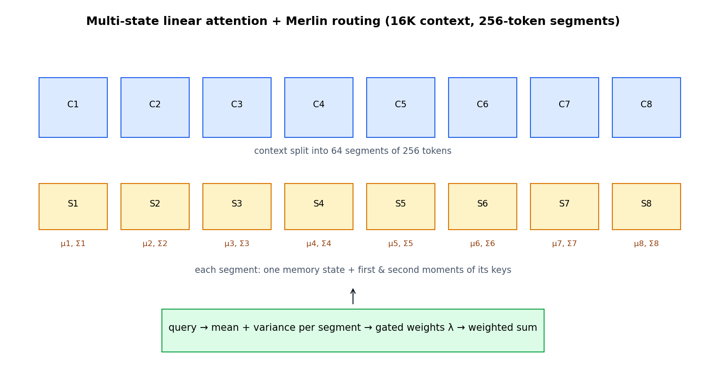
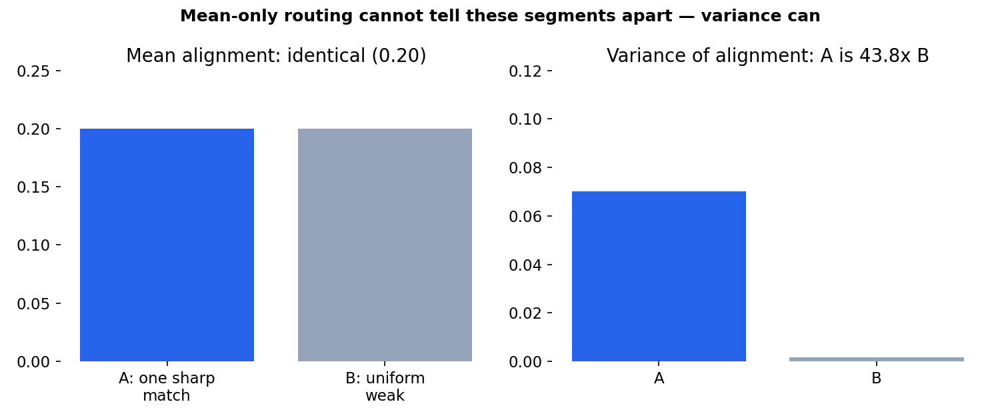
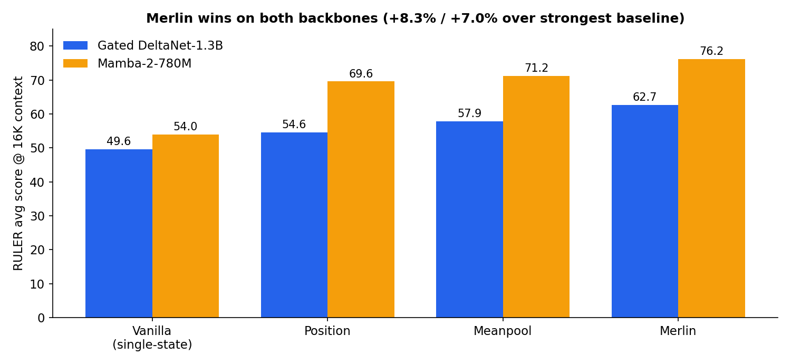
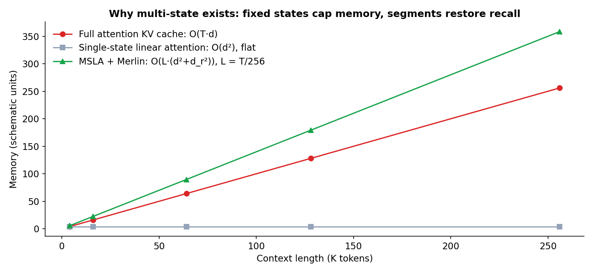

Two document chunks walk into a model. Both score 0.20 on average relevance to your question. One contains the exact fact you need; the other contains nothing but vaguely related words. A router that only looks at the average cannot tell them apart — it splits its attention 50/50 and dilutes the answer with noise. That is the quiet flaw inside today's most memory-efficient language models, and a Princeton paper posted October 27, 2026 fixes it with a statistic you learned in high school: variance.
The paper is "Multi-State Linear Attention with Generalized Second-Order Routing" (arXiv:2610.37645), from Hee Seung Hwang, Sanghyuk Chun, Xindi Wu, and Olga Russakovsky at Princeton, with Zhiwei Deng at Google DeepMind. Its method, Merlin (MomEnt Routing for multi-state LINear attention), lifts long-context scores by up to 13.5% on LongBench and 8.3% on RULER — and beats baselines that use 4× more memory. No new parameters worth mentioning, no bigger state, no extra memory. Just a second moment.
The ELI5 version
A normal Transformer remembers everything you ever said to it, word for word — like keeping every receipt in a shoebox. That works until the shoebox gets huge: reading it costs time that grows with the square of its size.
Linear attention models throw the shoebox away and keep a single summary page instead. Each new word updates the summary; nothing is stored individually. Memory stays constant no matter how long the conversation gets. The price: the summary blurs. Ask about something from 10,000 words ago and the answer may have been averaged away.
Multi-state linear attention is the compromise: chop the context into segments — 256 tokens each in this paper — and keep one summary page per segment. At 16,000 tokens of context, that is 64 pages. The model then has to decide, for each question, which pages matter. That decision is called aggregation, and it is where the mean lies.
Old aggregation methods weight each segment by recency (newer = more important) or by the average similarity between the question and the segment's words. The average is the trap. A segment with one perfect match buried among junk has the same average as a segment of uniform mediocrity. The model cannot see the difference, so it cannot find the needle.
Merlin's fix: keep two summaries per segment instead of one — the average direction of its keys (first moment) and how spread out they are (second moment). From those two, a query recovers both the mean alignment and the variance of its alignment with each segment. High variance means "something in here matches sharply." The router then mixes the two signals with a learned gate and picks the segment that actually contains the answer.
How it works: the loop, in three steps
Step 1 — Segment and compress. The context is split into uniform 256-token segments. Each segment gets its own recurrent memory state (the usual linear-attention state, a matrix of key-value outer products) plus two small summaries of its keys: μ, the mean key vector, and Σ, the average of the key outer products. Both are fixed-size — their dimensions depend only on a compact routing dimension d_r, smaller than the model dimension d — so per-segment cost stays flat as the segment grows.

Step 2 — Score each segment twice. For a query q′, Merlin computes the mean alignment r^μ = μᵀq′ and the variance r^Σ = q′ᵀΣq′ − (r^μ)². That second formula is just the definition of variance — E[x²] − E[x]² — computed from the stored moments without ever revisiting the segment's tokens. The toy below shows why it matters: two segments with identical mean alignment 0.20 get identical weights from a mean-only router, while Merlin gives the sharp segment 69% of the weight.

Step 3 — Gate and mix. The final weight λ is a gated mixture of two separately softmaxed scores: λ = γ·softmax(τ_μ·r^μ) + (1−γ)·softmax(τ_Σ·r^Σ), where γ is a learned per-token gate and the τ's are learnable temperatures. The model learns, per token, whether to trust the average or the spread.
The elegant part is why this works, and it is not a hack. If you took full softmax attention and grouped its mass by segment, the log-evidence for a segment expands (a cumulant expansion around temperature zero) into exactly two leading terms: the mean alignment and half the variance. Mean-only routing is a first-order approximation to softmax attention; Merlin is the second-order one. The paper's title says it plainly: "generalized second-order routing." First-order routing throws away the term that distinguishes a needle from noise.
The state of the art: what the numbers actually say
The authors converted two small backbones — Gated DeltaNet-1.3B (pretrained on 50B tokens) and Mamba-2-780M — into multi-state variants with two stages of mid-training (2B tokens, then 60M tokens of RULER-style data), then evaluated at 16K context against three baselines: Vanilla (single-state, no segmentation), Position (recency weights), and Meanpool (mean-only routing).

On RULER's needle-in-a-haystack and QA tasks, Merlin averages 62.7 for Gated DeltaNet vs 57.9 for Meanpool (+8.3% relative) and 76.2 for Mamba-2 vs 71.2 (+7.0%). The single-task gaps are starker: on S-NIAH-3, the hardest single-needle variant, Gated DeltaNet jumps from 21.2 (Meanpool) to 47.0, and Mamba-2 from 66.2 to 96.0. That is exactly the needle-finding failure mode the variance term is supposed to fix, showing up in the numbers.
On LongBench's eleven tasks (single-doc QA, multi-doc QA, summarization, few-shot learning, all under 16K tokens), Merlin averages 21.9 vs 19.3 for Gated DeltaNet (+13.5%) and 20.6 vs 18.4 for Mamba-2 (+12.0%), with the strongest gains on QA tasks. And the headline that matters for deployment: Merlin beats baselines that consume 4× more memory — the second moment buys more accuracy than quadrupling the state.

Merlin also lands in a crowded 2026 wave attacking the same problem — how to make a compressed recurrent state more expressive without giving up constant memory. The paper sits alongside Dynamic Linear Attention (ICML 2026, semantic segment boundaries), HOLA (a small exact KV cache bolted onto linear attention), and MARCH (checkpointed states with content-derived retrieval keys). Merlin's bet is the narrowest and cheapest: don't change what you store, change how you route over it.
The honest caveat — where this could break
Four things to keep in view. First, the scale is small and the context is short. Both backbones are under 1.3B parameters and every evaluation is at 16K tokens. Whether second-order routing holds its edge at 70B parameters and 1M-token contexts — where the segment count grows 64× — is untested. Second, mid-training is required. You cannot bolt Merlin onto an existing model; the backbones needed 2B + 60M tokens of continued training to learn to use the new routing. Third, segments are dumb. Uniform 256-token chunks cut mid-sentence and mid-thought; the paper studies aggregation, not separation, and a smarter segmenter might matter as much as a smarter router. Fourth, this is a preprint. Posted October 27, 2026, not peer-reviewed, and the strongest baseline comparisons are against the authors' own mid-training recipe — independent replication at frontier scale is the next step, not a formality.
Takeaways
- The average is a lossy summary of relevance. A segment with one perfect match and a segment of uniform mediocrity can share the same mean alignment — and mean-only routers cannot tell them apart.
- Variance is the missing signal. Merlin stores the first and second moments of each segment's keys, recovering mean and spread of query alignment without revisiting tokens.
- Second-order routing is a principled approximation, not a trick. Grouped softmax attention expands into mean + variance terms; Merlin keeps both, mean-only routing keeps one.
- The gains are real and cheap: +8.3%/+7.0% on RULER, +13.5%/+12.0% on LongBench, beating 4×-memory baselines with no extra memory. The needle tasks (S-NIAH-3: 21.2 → 47.0, 66.2 → 96.0) show the mechanism working as advertised.
- The open question is scale. 1.3B parameters and 16K contexts prove the idea; frontier models and million-token contexts will prove the product.
- Check it yourself. The companion notebook reproduces the core demo in miniature: two segments, identical means, different variances — mean-only routing splits 50/50, Merlin picks the needle — plus the grouped-softmax expansion and the paper's headline numbers recomputed.